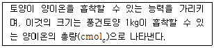

유기농업기능사 (2013-04-14 기출문제)
1과목: 작물재배
1. 광(light)과 작물생리작용에 관한 설명으로 옳지 않은 것은?
- 광합성에 주로 이용되는 파장역은 300~400nm이다.
- 광합성 속도는 광의 세기 이외에 온도, CO2, 풍속에도 영향을 받는다.
- 광의 세기가 증가함에 따라 작물의 광합성 속도는 광포화점 까지 증가한다.
- 녹색광(500~600nm)은 투과 또는 반사하여 이용률이 낮다.
(정답률: 80%)

2. 토양에 흡수·고정되어 유효성이 적은 인산질 비료의 이용을 높이는 방법으로 거리가 먼 것은?
- 유기물시용으로 토양내 부식함량을 높인다.
- 토양과 인산질 비료와의 접촉면이 많아지게 한다.
- 작물 뿌리가 많이 분포하는 곳에 시용한다.
- 기온이 낮은 지역에서는 보통 시용량보다 2~3배 많이 시용한다.
(정답률: 48%)
3. 수해에 관여하는 요인으로 옳지 않은 것은?
- 생육단계에 따라 분얼초기에는 침수에 약하고, 수잉기~출수기에 강하다
- 수온이 높으면 물속의 산소가 적어져 피해가 크다.
- 질소비료를 많이 주면 호흡작용이 왕성하여 관수해가 커진다.
- 4~5일의 관수는 피해를 크게 한다.
(정답률: 77%)
4. 기상생태형과 작물의 재배적 특성에 대한 설명으로 틀린 것은?
- 파종과 모내기를 일찍하면 감온형은 조생종이 되고 감광형은 만생종이 된다.
- 감광형은 못자리기간 동안 영양이 결핍되고 고온기에 이르면 쉽게 생식생장기로 전환된다.
- 만파만식할 때 출수기 지연은 기본영양생장형과 감온형이 크다.
- 조기수확을 목적으로 조파조식을 할 때 감온형이 알맞다.
(정답률: 51%)
5. 벼를 논에 재배할 경우 발생되는 주요 잡초가 아닌 것은?
- 방동사니, 강피
- 망초, 쇠비름
- 가래, 물피
- 물달개비, 개구리밥
(정답률: 77%)
6. 토양 pH의 중요성이라고 볼 수 없는 것은?
- 토양 pH는 무기성분의 용해도에 영향을 끼친다.
- 토양 pH가 강산성이 되면 Al과 Mn이 용출되어 이들 농도가 높아진다.
- 토양 pH가 강알카리성이 되면 작물생육에 불리하지 않다.
- 토양 pH가 중성 부근에서 식물양분의 흡수가 용이하다.
(정답률: 79%)
7. 도복을 방지하기 위한 방법이 아닌 것은?
- 키가 작고 대가 실한 품종을 선택한다.
- 가리, 인산, 석회를 충분히 시용한다.
- 벼에서 마지막 논김을 맬 때 배토를 한다.
- 출수 직후에 규소를 엽면살포한다.
(정답률: 63%)
8. 다음 중 토양 염류집적이 문제가 되기 가장 쉬운 곳은?
- 벼 재배 논
- 고랭지채소 재배지
- 시설채소 재배지
- 일반 밭작물 재배지
(정답률: 83%)
9. 식물 병 중 세균에 의해 발병하는 병이 아닌 것은?
- 벼흰잎마름병
- 감자무름병
- 콩불마름병
- 고구마무름병
(정답률: 50%)
10. 농경의 발상지라고 볼 수 없는 곳은?
- 큰강의 유역
- 각 대륙의 내륙부
- 산간부
- 해안지대
(정답률: 76%)
11. 토양의 물리적 성질에 대한 설명으로 옳지 않은 것은?
- 모래, 미사 및 점토의 비율로 토성을 구분한다.
- 토양 입자의 결합 및 배열 상태를 토양 구조라 한다.
- 토양 입자들 사이의 모든 공극이 물로 채워진 상태의 수분 함량을 포장용수량이라 한다.
- 토양은 공기가 잘 유통되어야 작물 생육에 이롭다.
(정답률: 84%)
12. 작물 재배시 배수의 효과가 아닌 것은?
- 습해와 수해를 방지한다.
- 잡초의 생육을 억제한다.
- 토양의 성질을 개선하여 작물의 생육을 촉진한다.
- 농작업을 용이하게 하고, 기계화를 촉진한다.
(정답률: 68%)
13. 냉해의 종류가 아닌 것은?
- 지연형 냉해
- 장해형 냉해
- 한해형 냉해
- 병해형 냉해
(정답률: 75%)
14. 1843년 식물의 생육은 다른 양분이 아무리 충분해도 가장 소량으로 존재하는 양분에 의해서 지배된다는 설을 제창한 사람과 이에 관한 학설은?
- LIEBIG, 최소량의 법칙
- DARWIN, 순계설
- MENDEL, 부식설
- SALFELD, 최소량의 법칙
(정답률: 76%)
15. 기원지로서 원산지를 파악하는데 근간이 되고 있는 학설은 유전자 중심설이다. Vavilov의 작물의 기원지로 해당하지 않는 곳은?
- 지중해 연안
- 인도·동남아시아
- 남부 아프리카
- 코카서스·중동
(정답률: 73%)
16. 수분함량이 충분한 토양의 경우, 일반적으로 식물의 뿌리가 수분을 흡수하는 토양깊이는?
- 표토 30cm이내
- 표토 40~50cm
- 표토 60~70cm
- 표토 80~90cm
(정답률: 69%)
17. 작부체계의 이점이라고 볼 수 없는 것은?
- 병충해 및 잡초발생의 경감
- 농업노동의 효율적 분산 곤란
- 지력의 유지증강
- 경지 이용도의 제고
(정답률: 81%)
18. 멀칭의 효과에 대한 설명 중 옳지 않은 것은?
- 지온 조절
- 토양, 비료 양분 유실
- 토양건조 예방
- 잡초발생 억제
(정답률: 86%)
19. 논에 요소비료를 15.0kg을 주었다. 이 논에 들어간 질소의 유효성분함유량은 몇 kg인가?
- 약 3.0kg
- 약 6.9kg
- 약 8.3kg
- 약 9.0kg
(정답률: 62%)
20. 벼 모내기부터 낙수까지 m2당 엽면증산량이 480mm, 수면증발량이 400mm, 지하침투량이 500mm이고 유효우량이 375mm일 때, 10a에 필요한 용수량은 얼마인가?
- 약 500㎘
- 약 1000㎘
- 약 1500㎘
- 약 2000㎘
(정답률: 58%)
2과목: 토양관리
21. 토양단면상에서 확연한 용탈층을 나타나게 하는 토양생성작용은?
- 회색화작용(gleyzation)
- 라토솔화작용(laterization)
- 석회화작용(calcification)
- 포드졸화작용(podzolization)
(정답률: 77%)
22. 토성 결정의 고려대상이 아닌 것은?
- 모래
- 미사
- 유기물
- 점토
(정답률: 89%)
23. 담수된 논토양의 환원층에서 진행되는 화학반응으로 옳은 것은?
- S → H2S
- CH4 → CO2
- Fe2+ → Fe3+
- NH4 → NO3
(정답률: 44%)
24. 작물생육에 대한 토양미생물의 유익작용이 아닌 것은?
- 근류균에 의하여 유리질소를 고정한다.
- 유기물에 있는 질소를 암모니아로 분해한다.
- 불용화된 무기성분을 가용화 한다.
- 황산염의 환원으로 토양산도를 조절한다.
(정답률: 56%)
25. 다음 토양 중 일반적으로 용적밀도가 작고, 공극량이 큰 토성은?
- 사토
- 사양토
- 양토
- 식토
(정답률: 52%)
26. 토양의 풍식작용에서 토양입자의 이동과 관계가 없는 것은?
- 약동(saltation)
- 포행(soil creep)
- 부유(suspension)
- 산사태이동(sliding movement)
(정답률: 62%)
27. 다음이 설명하는 것은?

- 교환성 염기
- 포장용수량
- 양이온교환용량
- 치환성양이온
(정답률: 80%)
28. 간척지 토양의 특성에 대한 설명으로 틀린 것은?
- Na+에 의하여 토양분산이 잘 일어나서 토양공극이 막혀 수직배수가 어렵다.
- 토양이 대체로 EC가 높고 알칼리성에 가깝고 토양반응을 나타낸다.
- 석고(CaSO4)의 시용은 황산기(SO42-)가 있어 간척지에 시용하면 안 된다.
- 토양유기물의 시용은 간척지 토양의 구조발달을 촉진시켜 제염효과를 높여 준다.
(정답률: 66%)
29. 미생물의 수를 나타내는 단위는?
- cfu
- ppm
- mole
- pH
(정답률: 84%)
30. 배수 불량으로 토양환원작용이 심한 토양에서 유기산과 황화수소의 발생 및 양분흡수 방해가 주요 원인이 되어 발생하는 벼의 영양장해 현상은?
- 노화현상
- 적고현상
- 누수현상
- 시들음현상
(정답률: 64%)
31. 우리나라 논토양의 퇴적양식은 어떤 것이 많은가?
- 충적토
- 붕적토
- 잔적토
- 풍적토
(정답률: 66%)
32. 물에 의한 침식을 가장 잘 받는 토양은?
- 토양입단이 잘 형성되어 있는 토양
- 유기물 함량이 많은 토양
- 팽창성 점토광물이 많은 토양
- 투수력이 큰 토양
(정답률: 62%)
33. 경사지 밭토양의 유거수 속도조절을 위한 경작법으로 적합하지 않은 것은?
- 등고선재배법
- 간작재배법
- 등고선대상재배법
- 승수로설치재배법
(정답률: 63%)
34. illite는 2:1 격자광물이나 비팽창형 광물이다. 이는 결정단위 사이에 어떤 원소가 음전하의 부족한 양을 채우기 위하여 고정되어 있는데 그 원소는?
- Si
- Mg
- Al
- K
(정답률: 43%)
35. 우리나라의 주요광물인 화강암의 생성위치와 규산함량이 바르게 짝지어진 것은?
- 생성위치 - 심성암, 규산함량 – 66% 이상
- 생성위치 - 심성암, 규산함량 – 55% 이하
- 생성위치 - 반심성암, 규산함량 – 66% 이상
- 생성위치 - 반심성암, 규산함량 – 55% 이하
(정답률: 57%)
36. 다음 중 미나마타병을 일으키는 중금속은?
- Hg
- Cd
- Ni
- Zn
(정답률: 63%)
37. 토양의 입단형성에 도움이 되지 않는 것은?
- Ca 이온
- Na 이온
- 유기물의 작용
- 토양개량제의 이용
(정답률: 69%)
38. 토양의 물리적 성질이 아닌 것은?
- 토성
- 토양온도
- 토양색
- 토양반응
(정답률: 52%)
39. 토양단면을 통한 수분이동에 대한 설명으로 틀린 것은?
- 수분이동은 토양을 구성하는 점토의 영향을 받는다
- 각 층위의 토성과 구조에 다라 수분의 이동양상은 다르다.
- 토성이 같을 경우 입단화의 정도에 따라 수분이동 양상은 다르다.
- 수분이 토양에 침투할 때 토양입자가 미세할수록 침투율은 증가한다.
(정답률: 75%)
40. 토양온도에 미치는 요인이 아닌 것은?
- 토양의 비열
- 토양의 열전도율
- 토양피복
- 토양공기
(정답률: 64%)
3과목: 유기농업일반
41. 종자용 벼를 탈곡기로 탈곡할 때 가장 적합한 분당 회전속도는?
- 50회
- 200회
- 400회
- 800회
(정답률: 68%)
42. 작물의 육종목표 중 환경친화형과 관련되는 것은?
- 수량성
- 기계화 적성
- 품질 적성
- 병해충 저항성
(정답률: 73%)
43. 시설토양을 관리하는데 이용되는 텐시오미터의 중요한 용도는?
- 토양수분장력측정
- 토양염류농도측정
- 토양입경분포조사
- 토양용액산도측정
(정답률: 50%)
44. 과수재배에 적합한 토양의 물리적 조건은?
- 토심이 낮아야 한다
- 지하수위가 높아야 한다.
- 점토함량이 높아야 한다.
- 삼상분포가 알맞아야 한다.
(정답률: 72%)
45. 유기축산에서 올바른 동물관리 방법과 거리가 먼 것은?
- 항생제에 의존한 치료
- 적절한 사육 밀도
- 양질의 유기사료 급여
- 스트레스 최소화
(정답률: 91%)
46. 소의 사료는 기본적으로 어떤 것을 급여하는 것을 원칙으로 하나?
- 곡류
- 박류
- 강피류
- 조사료
(정답률: 71%)
47. 비닐하우스에 이용되는 무적필름의 주요 특징은?
- 값이 싸다.
- 먼지가 붙지 않는다.
- 물방울이 맺히지 않는다.
- 내구연한이 길다.
(정답률: 62%)
48. 유기농업의 목표가 아닌 것은?
- 토양의 비옥도를 유지한다.
- 자연계를 지배하려 하지 않고 협력한다.
- 안전하고 영양가 높은 식품을 생산한다.
- 인공적 합성화합물을 투여하여 증산한다.
(정답률: 91%)
49. 일반적으로 발효퇴비를 만드는 과정에서 탄질비(C/N율)로 가장 적합한 것은?
- 1이하
- 5~10
- 20~35
- 50 이상
(정답률: 67%)
50. 토양에서 작물이 흡수하는 필수성분의 형태가 옳게 짝지어진 것은?
- 질소 – NO3-, NH4+
- 인산 - HPO3+, PO4-
- 칼리 - K2O+
- 칼슘 - CaO+2
(정답률: 72%)
51. 유기축산물 생산을 위한 유기사료의 분류시 조사료에 속하지 않는 것은?
- 건초
- 생초
- 볏짚
- 대두박
(정답률: 70%)
52. 친환경농업의 필요성이 대두된 원인으로 거리가 먼 것은?
- 농업부문에 대한 국제적 규제 심화
- 안전농산물을 선호하는 추세의 증가
- 관행농업 활동으로 인한 환경오염 우려
- 지속적인 인구증가에 따른 증산 위주의 생산 필요
(정답률: 82%)
53. 토마토의 배꼽썩음병의 발생원인은?
- 칼슘결핍
- 붕소결핍
- 수정불량
- 망간과잉
(정답률: 65%)
54. 유기농산물을 생산하는데 있어 올바른 잡초 제어법에 해당하지 않는 것은?
- 멀칭을 한다.
- 손으로 잡초를 뽑는다.
- 화학 제초제를 사용한다.
- 적절한 윤작을 통하여 잡초 생장을 억제한다.
(정답률: 90%)
55. 다음 과실비대에 영향을 끼치는 요인 중 온도와 관련한 설명으로 올바른 것은?
- 기온은 개화 후 일정기간동안은 과실의 초기생장속도에 크게 영향이 미치지 않지만 성숙기에는 크게 영향을 끼친다.
- 생장적온에 달할 때 까지 온도가 높아짐에 따라 과실의 생장속도도 점차 빨라지나 생장적온을 넘은 이후부터는 과실의 생장속도는 더욱 빨라지는 경향이 있다.
- 사과의 경우, 세포분열이 왕성한 주간에 가온을 하면 세포수가 증가하게 된다.
- 야간에 가온을 하면 과실의 세포비대가 오히려 저하되는 경향을 나타낸다.
(정답률: 50%)
56. 일대잡종(F1) 품종이 갖고 있는 유전적 특성은?
- 잡종강세
- 근교약세
- 원연교잡
- 자식열세
(정답률: 81%)
57. 토양을 가열소독할 때 적당한 온도와 가열시간은?
- 60℃, 30분
- 60℃, 60분
- 100℃, 30분
- 100℃, 60분
(정답률: 62%)
58. 유기재배용 종자 선정시 사용이 절대 금지된 것은?
- 내병성이 강한 품종
- 유전자변형 품종
- 유기재배된 종자
- 일반종자
(정답률: 89%)
59. 병해충 관리를 위해 사용이 가능한 유기농 자재 중 식물에서 얻은 것은?
- 목초액
- 보르도액
- 규조토
- 유황
(정답률: 82%)
60. 농업의 환경보전기능을 증대시키고, 농업으로 인한 환경오염을 줄이며, 친환경농업을 실천하는 농업인을 육성하여 지속가능하고 환경친화적인 농업을 추구함을 목적으로 하는 법은?
- 친환경농업육성법
- 환경정책기본법
- 토양환경보전법
- 농수산물 품질관리법
(정답률: 88%)